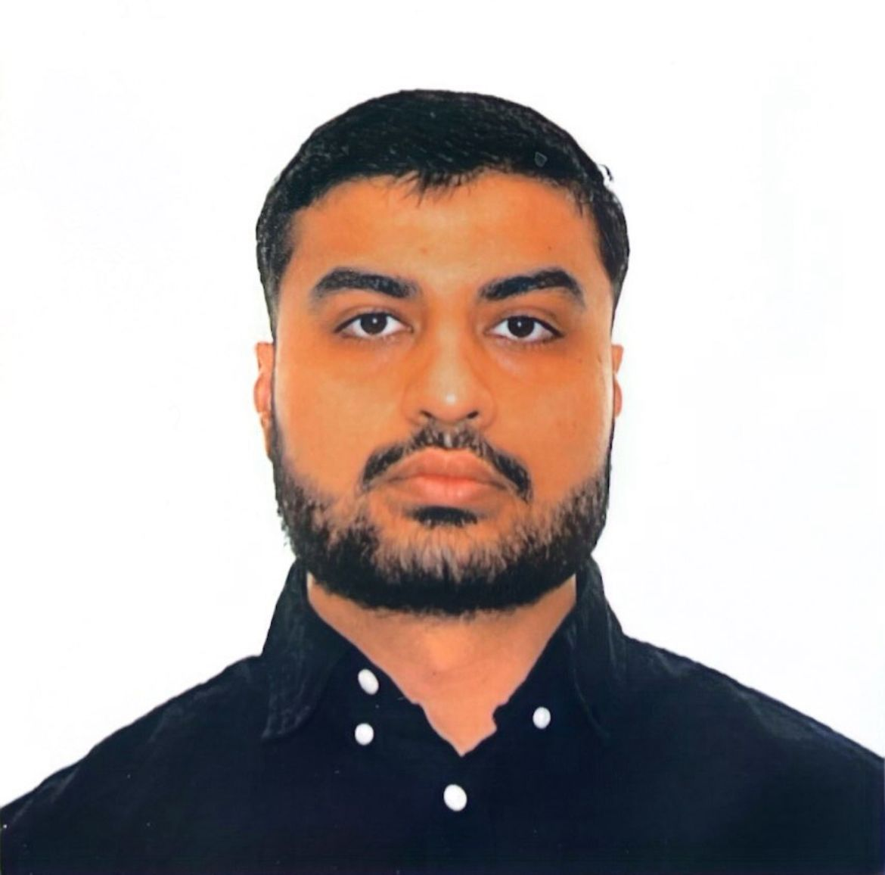

|
Sobhan Davoudi
I’m a Business Economics student at York University in Toronto. I’m currently juggling school, work, and a few ideas that I’m slowly trying to turn into something real.
Right now my life is a mix of lectures, swimming lessons, startup ideas, and late-night YouTube or esports. I enjoy talking about how things actually work in the real world — money, markets, business, all of it.
Email
/
GitHub
/
LinkedIn
|

|
About Me
I came to Canada as an international student and ended up in Business Economics because I like understanding how decisions, incentives, and policies show up in everyday life. I’m not pretending that I have everything figured out, but I’m serious about improving my grades and building things that actually work outside the classroom.
Most of my time goes into trying to catch up with courses, planning future projects, and figuring out how to combine what I’m learning with what I want to build. It’s a bit chaotic, but that’s kind of the point.
|
Projects & Ideas
These are a few projects and ideas I’m exploring. Some are still early, but they’re not just “school projects” — I’d like to see how far I can take them.
-
Blumex – A crypto platform idea that mixes learning with real trading. The goal is to help people understand what they’re doing instead of just following hype.
-
EcoProtein Farms – A Black Soldier Fly (BSF) farming and waste-recycling concept that turns organic waste into insect protein for animal feed.
-
Mining & Tunneling Supply – Exploring a small importing and distribution business for chemical sealant and ground-control products used in mining and tunneling in Canada.
|
Experience
-
Swimming Instructor – Teaching kids and adults how to swim, be safe in the water, and get over their fear of the deep end. It’s a mix of patience, repetition, and building trust.
-
Student at York University – Business Economics, with growing interest in how policy, technology, and finance connect.
-
Side Hustles & Experiments – From crypto to business plans, I’m constantly testing ideas, making mistakes, and learning what actually works.
|
Interests
Things I naturally end up spending time on:
- Economics, markets, and personal finance
- Crypto, trading platforms, and Web3 ideas
- Esports and gaming, especially Counter-Strike
- Entrepreneurship and building things from scratch
|
|
This website was created as part of an ITEC assignment and will probably change as my projects grow.
|
|
{kind=link}